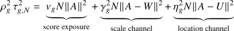
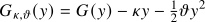
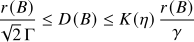
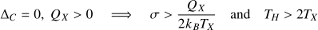
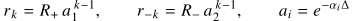

I work on statistical theory for systems that are only partly observed. In independent component analysis (ICA) and blind source separation, I study what limits separation, what common estimation pipelines quietly cost, and how to certify an estimate when the true sources are never observed. In stochastic thermodynamics, I study how much heat and dissipation can be inferred when the dynamics behind a record are hidden.
I am at the TReNDS Center, a joint center of Georgia State University, Georgia Tech, and Emory University in Atlanta. I received my Ph.D. in Computer Science from Georgia State in 2025, advised by Vince D. Calhoun.
For any standardized projection, the magnitude of the excess kurtosis is at most the largest source-kurtosis magnitude divided by the effective width of the mixture, its participation ratio. Under balanced mixing the bound is order-tight.
The question
Excess kurtosis, the standardized fourth cumulant, is a central contrast of ICA and the basis of FastICA’s kurtosis-type nonlinearity, and it is known to fade as mixtures widen: the central limit theorem pushes wide projections toward Gaussianity. Earlier analyses took contrast strength as given. This letter measures how much contrast survives, at the population level, when a projection spreads its weight over many sources. That is the regime of high-model-order group ICA in neuroimaging, where more samples cannot restore contrast that the mixture itself has removed.
Results
Theorem 1(Sharp redundancy bound). For any standardized projection y = Σjwjsj, |κ(y)| ≤ κmax Σjw4j = κmax/Reff (Corollary 1). Under balanced mixing (maxjw2j ≤ cb/R) this is at most cbκmax/R, and equal weights with equal kurtoses attain |κ0|/R exactly. Proposition 1 shows that balance is generic inside well-conditioned blocks, with cb growing at most logarithmically in R.
Corollary 2(Necessary model-order screening condition). The contrast of a balanced projection can exceed the estimation noise floor σ0/√T only if R < cbκmax√T / σ0, so doubling the tolerable width takes four times the data. The letter gives a coarse recipe that estimates this ceiling from data and flags hopeless model orders.
Theorem 2(Purification lower bound). Keeping m ≪ R sources of one kurtosis sign and renormalizing their weights gives |κ(ypur)| ≥ κmin/m, with κmin the smallest kurtosis magnitude among the kept sources, whatever R is. A data-driven version picks the subset from a preliminary separation, without an oracle.
Evidence
Balanced mixtures of Student-t sources follow |κ̂(y)| ≈ 1.57/R (R2 = 0.994), and the estimator noise crosses the population contrast near T ≈ 3 × 104, as the screen predicts. Keeping m = 5 sign-consistent sources holds the contrast near 0.52 (oracle) and 0.59 (data-driven) from R = 20 to 200, while the full mixture falls from about 0.10 to 0.03.
On resting-state fMRI from COBRE (n = 155), the per-subject kurtosis gap between the leading and the typical component time courses shrinks from model order 53 to 100 (paired one-sided Wilcoxon test, p = 1.74 × 10−27). The letter presents this as a supportive sanity check rather than a controlled test, since changing the model order also changes the signal subspace.
With independent sources, the characteristic function of the observations is the product of the source characteristic functions along the mixing columns. The product damps, and it cannot erase zeros.
The question
In overcomplete ICA, p sensors observe q > p independent sources. Pairwise non-collinear mixing directions are still identifiable for non-Gaussian sources, but two questions were open. How many samples does the problem need, for any estimator? And can the direction of one source of interest be estimated without modeling the others? The letter answers both from the product identity above.
Results
Theorem 1(Aliasing barrier). With two sensors and q equally spaced sources sharing a smooth symmetric law (Gram–Charlier laws, or binary symbols in Gaussian noise), a rotation by π/(2q) leaves every cumulant of order below 2q unchanged and moves the observation law exponentially little in total variation. Resolving the directions therefore takes eΘ(q) samples, necessary for every estimator and sufficient for a family of sources; for the Gram–Charlier law φ4, 1.5288q − O(log q) ≤ log n*(q) ≤ 2.3689q + O(1). Already at q = 10 the squared Hellinger distance is 4.1 × 10−9, so at least 6 × 107 samples are needed.
Theorem 2(Immunity). If the characteristic function of a target source has a real zero, as for equiprobable binary or pulse-amplitude symbols, complex-exponential moment conditions on its mixing direction are exactly unbiased, whatever the number, strength, laws, and mutual dependence of the other sources, provided they are independent of the target. Each such source leaves zero lines in the observed characteristic function that no other source can remove (Corollary 1); the zero-line estimator CFZ locates the target’s line within a prior window that contains no other source with such zeros.
Propositions 1 and 2(Moments are immune, variance is not; Price of local immunity). Immunity covers the moments, not the variance: for complex-exponential (Fourier) moments, each added interferer multiplies the Jacobian of the moment conditions by a factor of modulus at most one. Locally, an estimator that must stay unbiased against arbitrary weak interference keeps a computable share of the information: zero for Gaussian and Laplace sources, above 90% for binary symbols in Gaussian noise at 10 dB.
Evidence
The simulations estimate the direction of a binary target at 17°, seen by a two-axis vector sensor at 10 dB among Gaussian, four-level PAM, impulsive (Bernoulli–Gaussian), and heavy-tailed Student-t interferers. At n = 105 snapshots the RMSE of CFZ is 0.15°–0.40° across seven settings, its standard deviation within 10% of the prediction of Proposition 1, with no error above 3°.
Baselines with a fixed interference model level off instead: semi-blind likelihood with a Gaussian model (SB-G) and a kurtosis contrast under mixed or heavy-tailed interference, and a Student-t model (SB-T) under mixed interference at the lower power, with errors of up to 8.4°. A Gaussian-mixture likelihood matches or beats CFZ at one to two orders of magnitude more computation: where a model is adequate, likelihood is the more efficient route; immunity is what remains when none is.
Table II of the paper: direction error at n = 105
Setting
CRB
CFZ [Prop. 1]
SB-G
SB-T
SB-GMM
KURT
G3 (.5)
0.22
0.282 [0.298]
0.28
0.32
0.28
0.33
A3 (.5)
0.20
0.336 [0.353]
0.26
0.41
0.30
0.37
M3 (.5)
0.14
0.204 [0.226]
5.5†
0.21
0.18
8.4†
M3 (.25)
0.12
0.147 [0.148]
1.4†
0.56†
0.13
7.1†
M6 (.25)
0.18
0.254 [0.237]
2.7†
0.40†
0.25
6.9†
M9 (.25)
0.25
0.396 [0.379]
3.6†
1.5†
0.37
6.3†
H3 (.25)
0.22
0.302 [0.312]
6.4†
0.29
0.28
6.3†
Root-mean-square direction error in degrees, with the CFZ standard deviation predicted by Proposition 1 in brackets. Interference is Gaussian (G), PAM-4 (A), mixed (M), or heavy-tailed (H); the digit is the number of interferers and the number in parentheses their power. † Absolute bias above a third of the RMSE and three standard errors, or more than 5% of absolute errors above 3°.
Swipe sideways for all panels, or tap to open the full figure.
Fig. 1. (a) The modulus of the empirical characteristic function (log scale) for a binary target at 17° among Gaussian, PAM-4, and impulsive interferers (n = 2 × 104): the zero lines of the target (dashed) and of the PAM-4 interferer (dotted) survive the other factors. (b) The aliasing barrier: exact total variation (filled) and squared Hellinger distance (open) between the configurations rotated by 0 and π/(2q), for Gram–Charlier laws φa with a = 1, 2, 4, fall exponentially in q. (c) RMSE against n with three mixed interferers: CFZ tracks the prediction of Proposition 1, just above the oracle Cramér–Rao bound, while SB-G, SB-T, and the kurtosis contrast level off and SB-GMM tracks CFZ.
3. Normalization Mismatch in ICA and Its Orthogonalized Remedy
Jingling Yang*, Yuda Bi*†, Linhao Bai, Vince D. Calhoun
Submitted to IEEE Transactions on Signal Processing, 2026
* Equal contribution. † Corresponding author.

The exact first-order cost of a protocol that scores records with weights A, scales with W, and centers with U. The last two terms are paid only when the normalizing records differ from the scored ones.

The orthogonalized contrast. With κ and ϑ estimated consistently from the normalizing records alone, it closes the scale and location channels and leaves matched-role fits unchanged.
The question
Some pipelines normalize an ICA criterion with statistics from records other than the ones that score it. FastICA’s sampleSize option scores a random fraction of the records while centering and whitening on all of them; real-time EEG pipelines keep the sphere of a calibration run; cross-fitting and reliability analyses refit on split or resampled records. The paper asks what this normalization mismatch costs, exactly, for one-unit and for symmetric fits; whether the cost can be removed without abandoning the protocol; and what agreement among differently normalized fits says about accuracy.
Results
Theorem 1(Local three-role influence law). Normalization is not orthogonal at first order, unlike the source density and smooth score parameters (Remark 1). For a one-unit fit with arbitrary scoring, scale, and centering weights, the influence function splits into score exposure, a scale channel, and a location channel, which gives the exact first-order cost above. Equal-size cross-fitting costs nothing; 10–20% reference or calibration normalizers cost up to hundreds of times the common-sample variance for log-cosh on sub-Gaussian targets.
Theorem 3(Symmetric fits under mismatch). For symmetric FastICA the law is pairwise. A pair pays through the difference of its sign-corrected scale weights, large for opposite curvature signs under log-cosh, and through the whitening’s own effective sample size, even when the roles match.
Theorems 2 and 4(Orthogonalized contrast; Orthogonalized symmetric contrast). Subtracting consistently estimated linear and quadratic terms removes the mismatch channels for one-unit and symmetric fits and leaves matched-role fits unchanged. What remains is the price of scoring fewer records and, for symmetric fits, the whitening’s effective sample size. Balanced reuse of the records reaches the common-sample law without any source moments (Corollary 2).
Corollaries 3, 4, and 6(Two-point targets; Exponential windows; Asymptotic localized confidence cone). For two-point targets such as BPSK, mismatch changes the rate from exact recovery to N−1/2. With exponentially weighted roles, the whitening memory should be the longer one. No remedy reduces the common sampling error, so agreement among differently normalized fits on the same scored records is blind to it; the paper gives an observable confidence cone to report instead.
Evidence
Five real signals (an electrocardiogram from the MIT-BIH Arrhythmia Database, two natural images, and the horizontal gradients of two more) are mixed by known random matrices. Under 10% reference or 20% calibration whitening, plain one-unit refits pay 9.9 to 728 times the common-sample variance and plain symmetric fits 22 to 71 times their common-sample loss, in line with the first-order predictions. Orthogonalized one-unit refits pay 1.01–1.09 and 1.23–1.37 times it, against the predicted 1 and 1.25. Across the reference, calibration, and subsample protocols, the symmetric remedy cuts every loss by 6 to 14 times.
In a line-by-line port of the FastICA sampleSize code path with a 10% subsample, the default deflation mode returned no component in any of 100 runs, and the redrawn-subset symmetric iteration with tanh met its stopping test in only 5 of 100. Patching four lines with the orthogonalized nonlinearity brought the tanh losses to the predicted floor and its stopping rate to 100 of 100. With pow3, the package’s default nonlinearity, the patch also brings the fixed-subset losses close to the floor, but the redrawn iteration stops in only 13 of 100 runs.
Table II of the paper: one-unit refits on real signals
Signal
Kurtosis μ4
cg/vg
Reference, 10%
Calibration, 20%
plain [prediction]
orth.
plain [prediction]
orth.
ECG
10.0
4.6
48.8298[42.2]
1.04
30.7 [29.9]
1.31
Image (china)
1.5
59.2
728.1 [533.6]
1.03
451.8 [371.1]
1.26
Image (face)
2.2
25.5
201.3253[230.6]
1.06
147.8274[160.7]
1.37
Gradient (ascent)
19.6
2.9
28.6 [27.1]
1.09
19.3 [19.4]
1.28
Gradient (flower)
58.0
1.3
14.2 [12.9]
1.01
9.93 [9.5]
1.23
Mean loss in units of the common-sample variance (d = 5, N = 40 000, 300 replications, log-cosh, independently resampled records), with the first-order prediction for plain refits in brackets; orthogonalized refits are predicted at 1 and 1.25. Reference: a random 10% normalizes and all records are scored. Calibration: the first 20% normalizes and the rest are scored. Superscripts give the number of returned roots when fewer than 300.
Swipe sideways for all panels, or tap to open the full figure.
Fig. 1. (a) A protocol gives the records three roles: A scores, W scales, U centers. (b) The one-unit price of common protocols for log-cosh on a shifted-exponential target, split into score exposure, scale channel, and location channel, in units of the common-sample variance; after orthogonalization only the score exposure remains. (c) Symmetric fits on the real signals with whitening on a random 10%: pairs of opposite curvature sign carry the cost.
4. Sharp Two-Sided Residual Certificates for Comparing ICA Estimates Without the Sources
Yuda Bi, Hanxin Chen, Sihan Jia, Zhaoxing Wei†
Under review, 2026
† Corresponding author.

For an orthogonal fourth-cumulant model, the off-diagonal residual r of a candidate brackets its distance D to the sources: from below with an optimal constant, and, for a candidate known to lie within distance D̄ < √2 of them, from above with a coefficient K(η) that tends to the optimal local value 1/√2. With equal-magnitude cumulants the two sides meet near the sources.
The question
An ICA run returns a demixing matrix but no measure of its accuracy. Since the sources are unknown, the natural source-free diagnostic is how well the estimate diagonalizes an observed statistic; for the fourth-order cumulant tensor, that is the off-diagonal residual. Upper bounds turn the residual into an error bar for one estimate, but deciding which of two estimates is closer to the sources also needs a computable lower bound. The question is practical in template-guided pipelines, where a guided estimate matches its template better than a data-only fit by construction, which says nothing about its distance to the sources.
Results
Theorem 1(Optimal global reverse bound). For every orthogonal candidate B and cumulants of any sign, r(B) ≤ √2 Γ D(B), where D is the distance to the signed-permutation orbit of the sources and Γ the root-sum-square of the two largest cumulant magnitudes. No smaller constant holds for all candidates (whenever the cumulant tensor is nonzero), and the bound improves on the column-wise constant by a factor of up to √d.
Theorem 2(Finite, locally sharp upper bound). If γ > 0 and the candidate is known to satisfy D(B) ≤ D̄ < √2, then D(B) ≤ K(η) r(B)/γ with η = 1 − D̄2/2; the coefficient decreases to the optimal local value 1/√2 as D̄ → 0.
Theorem 3(Observable bracket). A spectral estimate of Γ from the d2 × d2 unfolding of the observed tensor makes both sides computable under a valid tensor-error radius δ, giving L(B) ≤ D(B) ≤ C(B). With an exact tensor (δ = 0) the bracket is asymptotically exact near the source orbit for equal-magnitude cumulants (Corollary 1), and C(B) < L(V) certifies that B is closer to the sources than V.
Evidence
In a paired ablation with the same tensors, radii, and candidates, the new bounds raise the certified share of candidates truly closer than their reference from 22.6% to 45.0%, with no false verdicts. Median looseness C/D falls from 8.55 to 6.06, and across 3,360 exact-tensor comparisons the certified count rises from 132 to 1,253, again with no false claims.
The paper is explicit about the limits. Certifying more comparisons does not by itself lower the error of the returned estimate; no guided estimate can be certified closer to the sources than a residual-minimizing data-only fit; and all experiments are synthetic, with validation on real fMRI data left to future work.
Table 1 of the paper: fixed-candidate ablation
Variant
E1 C/D
E3 claims
Sensitivity (%)
Final/base
Legacy bounds
8.55
120
22.6
1.000
New lower bound
8.55
205
38.6
1.000
New upper bound
6.06
130
24.5
0.910
Both
6.06
239
45.0
0.910
E1 looseness C/D and E3 final/base error are medians; claims count C < L before the decision rule; sensitivity is the certified share of the 531 E3 candidates that are truly better than their reference. Final/base uses the tolerance τ/Gd = 0.01.
Swipe sideways for all panels, or tap to open the full figure.
Fig. 1. Sharp geometry. (a) Lower bound over true error for noiseless equal-magnitude rotations at angle 10−4: the new bound stays within 2 × 10−8 of one, while the legacy bound decays as 1/√d. (b) Upper bound over error at d = 8 as the rotation angle shrinks: the new bound tends to 1, the legacy bound to √2. (c) Certified share of the 3,360 exact-tensor comparison pairs.
Stochastic thermodynamics
5. Heat Constraints from Exponential Correlations and a Sharp Two-Temperature Threshold
The total entropy production rate σ of a stationary diffusion observed through one coordinate X is bounded below by the heat QX exchanged with the observed bath and the curvature defect ΔC: the zero-lag curvature of the autocorrelation minus that of an Ornstein–Uhlenbeck process with the same variance and diffusion. The bound is sharp for every allowed value of heat and curvature defect.

Every exponential autocorrelation has ΔC = 0, and positive heat then bounds the entropy production from below. The threshold TH > 2TX additionally assumes conservative forces, no external work, and one common hidden temperature: the hidden environment must be more than twice as hot as the observed bath.
The question
A stationary coordinate whose autocorrelation is a single exponential looks like an equilibrium Ornstein–Uhlenbeck (OU) process: an equilibrium OU model reproduces the complete Gaussian OU path law even when the hidden dynamics dissipates. A dissipation bound that uses only such a record must therefore allow zero, and bounds built on short-time correlations, correlation times, or cross-correlation asymmetry all vanish for an exact Gaussian OU record. The paper asks what thermodynamics survives inside this blind spot once the heat exchanged with the observed bath is measured independently.
Results
Curvature bound(Eq. 10). For stationary overdamped diffusions with constant diffusion, independent observed and hidden noises, even coordinates, nonlinear forces, and any finite number of hidden coordinates, σ ≥ q2/(2q + ΔC/DX) with q = QX/(kBTX), whenever the denominator is positive. It is the short-time thermodynamic uncertainty relation for the current weighted by the deviation of the observed drift from its variance-matched OU drift, which is optimal among combinations of drift and displacement; the variance sum rule gives its variance. The bound is strict at nonzero heat and a sharp infimum for every allowed heat and curvature defect.
Zero curvature defect(Eq. 11). At ΔC = 0, which every exponential autocorrelation satisfies, heat can flow only into the observed bath, and positive heat gives σ > QX/(2kBTX). Neither Gaussianity nor a Markov observation law is needed.
Two-temperature threshold(Eqs. 12–14). With conservative forces, constant positive mobilities, no external work, and one common hidden temperature, σ = q(1 − TX/TH), so at ΔC = 0 and QX > 0, TH > 2TX: the coordinate with the exponential record is the colder one, whatever the nonlinear forces and however many hidden coordinates there are. With several hidden baths that all supply heat, the heat-weighted harmonic mean of their temperatures replaces TH; the hottest bath is constrained, the coldest is not.
Reciprocal models and finite bandwidth(Eqs. 16–20). A reciprocal two-coordinate model realizes every TH/TX > 2 at fixed observed law and heat, approaching the threshold only as its hidden relaxation rate diverges. In linear conservative networks of any size with one hidden temperature, an exactly exponential record with positive heat couples to exactly two relaxation modes, so a cap Λmax on the relaxation rates raises the threshold to 2 + (2a + q)/(Λmax − a − q).
What response and finite data add(Eqs. 22–27). At ΔC = 0 the heat is q = −G′(0+) − a, the initial slope of the response to a small displacement, which the passive record does not contain. Conversely, a five-dimensional OU diffusion whose sampled covariance is exactly exponential at every lag can have a curvature defect of either sign and any size, so certifying ΔC = 0 requires a bandwidth or model assumption.
Evidence
A harmonically trapped particle driven by a programmed OU force makes the blind spot concrete. At the tuned stiffness the position spectrum is exactly that of an OU process at the force rate β, so the variance and corner-frequency calibrations agree with each other while both underestimate the stiffness; yet the probe delivers heat QX = kBTX(α − β) > 0 to its bath. With the drive treated as an even coordinate, the entropy production equals this heat in units of kBTX, and the sharp lower limit is half of it.
The heat must be measured independently, for example through a calibrated response measurement, and the paper quantifies how well conditioned that is. In a simulation that gives the estimator the exact two-coordinate model (q = 2, σ = 5/3), with 250 passive/driven pairs per frequency of 65,537 exactly sampled points each, the single-frequency inverse returns a physical solution in 99.2% of trials at ω = 4 but recovers the heat within 25% in only 66.8% of them; at ω = 0.05 and 64 these fractions fall to 55.6% and 32.0%. The simulation contains intrinsic fluctuations only; sensor noise and calibration error would add to them. Near the tuned stiffness, the statistical evidence against an OU law vanishes quadratically in the detuning while the heat stays finite.
For an experimental test the paper proposes a temperature scan in coupled thermal RC circuits. With a fixed drift (α = 2/τ, β = 5/τ, g = m = 2/τ), the cold coordinate becomes exactly exponential at TY/TX = 11/4 while heat keeps flowing; with 1 MΩ resistors and τ = 10 ms the capacitors are 5 nF and 10/3 nF. No experiment is reported.
Swipe sideways for both panels, or tap to open the full figure.
Fig. 3. Sharp threshold at zero curvature defect and its singular limit, for independent baths, conservative forces, no external work, and one hidden temperature. (a) At positive heat and zero curvature defect, 1 < RT ≤ 2 is excluded; every RT > 2 is realized at fixed a, DX, q. (b) For a = DX = q = 1, the bare hidden rate B/a = (RT + 1)/(RT − 2) diverges at the open endpoint.
6. Two Probes Recover the Bath Heat That Neither Reveals Alone
At cancellation, the heat each probe delivers to its bath, in thermal units, is its mechanical response rate αi minus the relaxation rate β of the shared force (the Harada–Sasa relation), with no calibration of the drive amplitude.

At double cancellation, filtering both records with the same first-order filter, which removes the relaxation of the force, leaves cross-covariance tails (lags k ≥ 1) that decay at the two response rates, one on each side of zero lag.
The question
Two harmonically trapped probes, each in its own thermal bath, are driven by one persistent, unobserved OU force. The drive can be tuned so that each position record has exactly the statistics of an equilibrium particle, which defeats every single-channel method; at equal response rates the joint record is also exactly time reversible, which defeats every method based on the arrow of time. The paper asks which response rates and probe–bath heat rates can still be identified from the two passive records.
Results
Two-probe sampled inverse(Eqs. 8–11). At double cancellation (both probes tuned, nonzero drive couplings), each sampled record is a first-order autoregression with coefficient b = e−βΔ. Filtering both records with en = X(nΔ) − bX((n−1)Δ) gives cross-covariance tails proportional to ak−11 at positive lags and ak−12 at negative lags, so consecutive lag ratios determine both response rates, equal responses included. The amplitudes and the zero-lag value are given in closed form.
Heat without a time arrow(Eqs. 14–21). The Harada–Sasa relation converts each recovered rate into heat. At equal responses the summed heat in thermal units, 2(α − β), is positive while the observed path irreversibility Π12 is exactly zero: the relative coordinate rejects the common force and relaxes at the response rate. Time-symmetric kinetic bounds are positive in this reversible pair but bound rather than attribute the heat (at (α, β) = (3, 1) the bound is 1.6 and the summed heat rate 4), and near equal response Π12 vanishes quadratically while the heat stays finite.
Fisher information(Eqs. 23–26). In the ideal continuous experiment with known diffusion, and with all other parameters estimated jointly, the information one probe carries about its own response rate vanishes quadratically with the weight of the response mode in its covariance, whereas the joint information matrix of the two probes is positive definite at every cancellation point with nonzero forcing, including equal responses. At (α1, α2, β) = (1, 2, 0.5) the joint values per unit time are 0.3582 and 0.01425, against zero for each probe alone. As the forcing vanishes at equal response, with heat rate h, the relative variance of an individual bath heat scales, to leading order, as 2β3/(h4Tobs) and that of the summed heat as 3β/(h2Tobs), for record duration Tobs.
Why bath independence is needed(Appendix C 4). With correlated probe noise and a partly shared drive, a fine-tuned family keeps the complete two-channel law while its response rate varies, so the response disappears from the data. An independent response measurement, switching off the drive at unchanged stiffness, or calibrating the drive intensity resolves it.
Evidence
Exact-sample likelihood fits on synthetic records, which are given neither cancellation nor the drive amplitude, measure finite-record precision. Across nine designs of 100 stationary pairs (N = 2000, rates (1, 2, 0.5)), neither the cancellation-constrained covariance fit nor the general Kalman likelihood dominates; all 900 fits pass the interval-validity checks, and nominal 90% intervals for the response rates cover 83–94%, the low end not significant after a Holm adjustment.
At equal responses (1, 1), with unknown and unequal diffusivities and means, 120 records give heat-rate RMSE of 0.12 and 0.15 for true rates of 0.5, and the heat intervals cover 109 and 107 of 120. Across this and a near-equal design (rates 0.95 and 1.05), the median interval widths are 90–94% of the fitted heat: at this duration the heat is identified, not yet precise.
The paper proposes a two-trap optical test: spheres of radius 0.5 µm at 300 K with α1 = 100 s−1, α2 = 200 s−1, and β = 50 s−1, rms forces of 0.0765 and 0.1711 pN, and bath heat rates of 50 and 150 kBT s−1. For an equal-response configuration (α = 100 s−1, β = 50 s−1, 5 ms sampling), a local asymptotic budget for ideal sampling asks for at least about 19 s of data to reach 20% precision on an individual bath heat, and about 22 min at weak forcing (6 s and 62 s for the summed heat); these durations are necessary, not sufficient. All numerical results use synthetic data; no experiment is reported.
Table I of the paper: paired recovery at cancellation
Δ
Tobs
Cancellation covariance fit
General Kalman likelihood
0.1
200
(0.173, 0.845)
(0.124, 0.708)
0.5
1000
(0.085, 0.309)
(0.060, 0.345)
1
2000
(0.059, 0.234)
(0.056, 0.267)
2
4000
(0.062, 0.373)
(0.088, 0.496)
Unconditional RMSE of the response rates (α1, α2), in inverse time, from 100 stationary pairs per row with N = 2000 exact transitions and (α1, α2, β) = (1, 2, 0.5). The covariance fit imposes cancellation; the Kalman likelihood estimates all seven covariance parameters and profiles both means without that constraint.
Swipe sideways for both panels, or tap to open the full figure.
Fig. 3. Exact bath heat, a kinetic lower bound, and observed irreversibility are distinct. (a) Equal-response cancellation family, β = 0.5, α1 = α2 = α: the summed bath entropy flow is 2(α − β), the time-symmetric kinetic bound B12 lies below it, and the observed Π12 is exactly zero. (b) Fixed (α1, α2, β) = (1, 2, 0.5) with drive coupling λ: bath heat is quadratic in λ, while observed information and irreversibility start at fourth order.